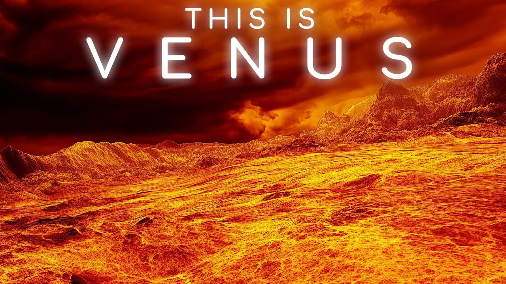

نظرة عامة
كوكب الزهرة هو ثاني كوكب في المجموعة الشمسية من حيث قربه للشمس. يُطلق عليه اسم "نجمة الصباح" أو "نجمة المساء" بسبب سطوعه الشديد. يُعتبر من الكواكب الأرضية، وهو مشابه جدًا لكوكب الأرض من حيث الحجم والتركيب، لكن تختلف الظروف على سطحه بشكل كبير.يُعتبر كوكب الزُهرة
سادس أكبر كواكب المجموعة الشمسية من حيث
الحجم والكتلة وقُربه إلى الأرض، ويُعد الكوكب
الثاني من حيث بُعده عن الشمس ويدور في مدار أقرب
منه إلى الأرض وباتجاه مُماثل لاتجاه عقارب الساعة
لذا فإن رؤيته تكون مُمكنة في فترة شروق الشمس أو
أثناء فترة غروبها فقط، وفي حال أُتيحت الفرصة
لرؤية هذا الكوكب فإن جمالاً خاصاً سيظهر لكوكب
يُعد الأروع بين الأجرام الموجودة في السماء
المجال المغناطيسي
يدور كوكب الزُهرة حول نفسه بشكل بطيء
ونتيجة لتلك الحركة يتكون مجال مغناطيسي
ضعيف جداً مقارنة بالمجال المغناطيسي الخاص
بكوكب الأرض، فعلى الرغم من تشابه حجم كوكب
الأرض بحجم كوكب الزُهرة، و تشابه حجم اللب
المكون من الحديد لكل منها إلا أن تلك الحركة
البطيئة للزُهرة جعلت مجاله المغناطيسي أقل
بكثير من المجال المغناطيسي لكوكب الأرض
الشكل والبُنية
يظهر كوكب الزُهرة من الفضاء الخارجي باللون
الأبيض الناصع نتيجة لانعكاس أشعة الشمس عن أسطح سُحبه الكثيفة،
ومع نفاذ بعض من أشعة الشمس عبر الغلاف الجوي السميك للكوكب فإن
هذا الغلاف يُرشح الضوء النافذ عبره بحيث يظهر الكوكب باللون البرتقالي
ولا يقتصر التشابُه بين كوكب الزهرة وبين كوكب الأرض على الصخور الموجودة في كلاهما،
فهذان الكوكبان مُتشابهان من حيث الكُتلة، والحجم،
وأنصاف الأقطار، وحتى الكثافة لذا فإنَّه يُطلق على كوكب الزُهرة توأم الأرض
